Snakes of Afghanistan
33 living snake species are recorded in Afghanistan in SnakeList: 13 venomous and 20 non-venomous, from 6 families.
- 33living species
- 6families
Danger to people · tap a number to show only those snakes
- 0giant constrictors
Harmful = dangerously venomous + giant constrictors. Low risk = not venomous and not a giant constrictor. Mildly venomous snakes have no serious bites to people documented. Any snake can bite.
These totals count the unique living snake species SnakeList records in Afghanistan. A species counts if it is recorded anywhere in the country, so not every snake lives in every part of it.
In SnakeList’s checklist filters
How many of the 33 living species here each filter in the SnakeList app picks out – tap a number to show only those snakes.
Snake family5 types, 6 families
Type
Family
Habitats15 habitat groups
Habitats are estimated from where each snake is recorded and what kind of snake it is, as in SnakeList; a snake can count in several.
Characteristics13 venomous, 4 constrictors
Constrictor and Non-constrictor count only snakes whose family or genus is documented as constricting or not; the rest are not documented.
Other filters2 popular, 5 rare
- 0invasive
- 0no photos
- 0extinct
Species
Showing 33 species
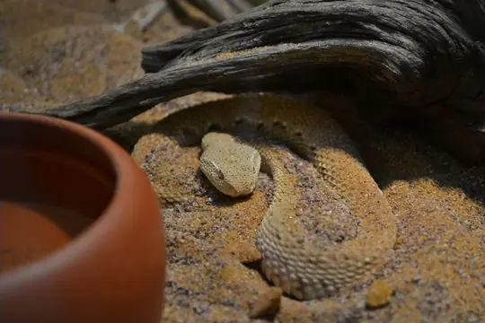
Asian Sand ViperEristicophis macmahoni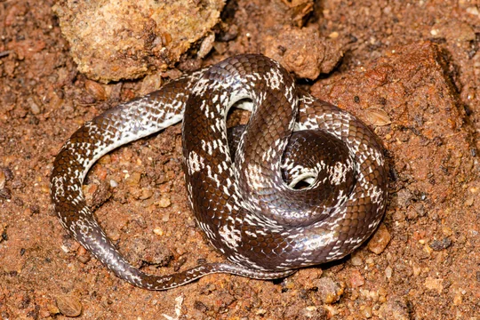
Barred Wolf SnakeLycodon striatus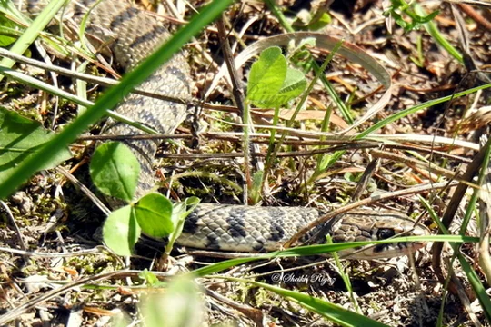
Braid SnakePlatyceps ladacensis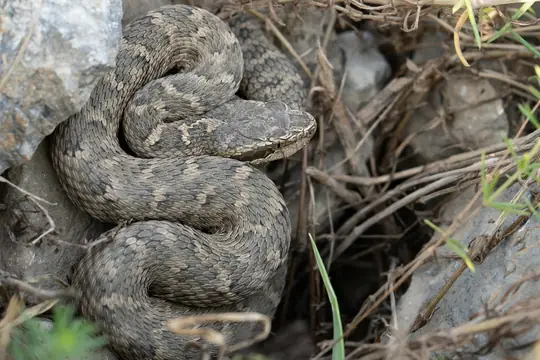
Caucasian PitviperGloydius caucasicus Central Asian CobraNaja oxiana
Central Asian CobraNaja oxiana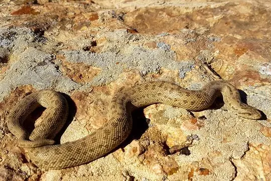
Central Asian Sand BoaEryx elegans Chequered KeelbackFowlea piscator
Chequered KeelbackFowlea piscator Common Cat SnakeBoiga trigonata
Common Cat SnakeBoiga trigonata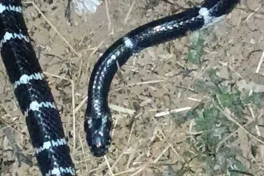
Common KraitBungarus caeruleus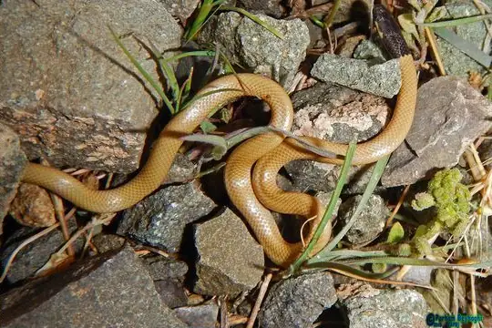
Dark-headed Dwarf Racer (persicus)Eirenis persicus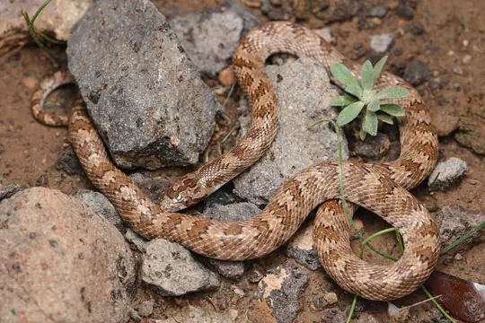
Derafshi SnakeLytorhynchus ridgewayi Diadem SnakeSpalerosophis diadema
Diadem SnakeSpalerosophis diadema Dione SnakeElaphe dione
Dione SnakeElaphe dione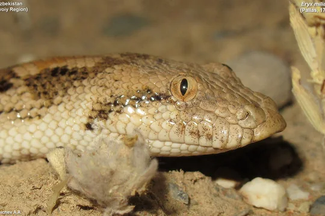
Dwarf Sand BoaEryx miliaris Forskal Sand SnakePsammophis schokari
Forskal Sand SnakePsammophis schokari Glossy-bellied RacerPlatyceps ventromaculatus
Glossy-bellied RacerPlatyceps ventromaculatus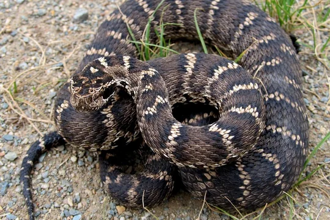
Halys Pit ViperGloydius halys Indian CobraNaja naja
Indian CobraNaja naja Indian Desert Tiger SnakeTelescopus rhinopoma
Indian Desert Tiger SnakeTelescopus rhinopoma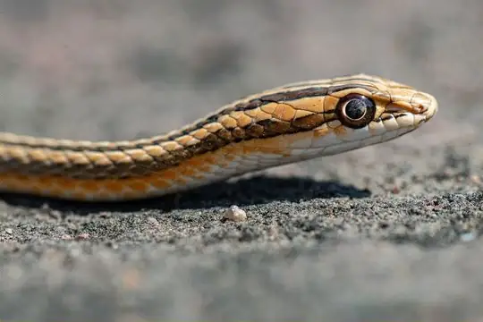
Leith's Sand SnakePsammophis leithii Levantine ViperMacrovipera lebetinus
Levantine ViperMacrovipera lebetinus Loos SnakeOligodon taeniolatus
Loos SnakeOligodon taeniolatus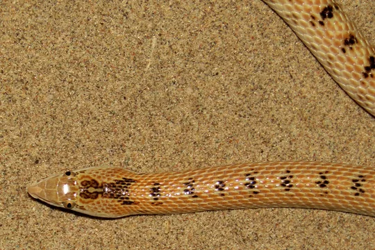
Maynard's Longnose Sand SnakeLytorhynchus maynardi Oriental RatsnakePtyas mucosa
Oriental RatsnakePtyas mucosa Persian Horned ViperPseudocerastes persicus
Persian Horned ViperPseudocerastes persicus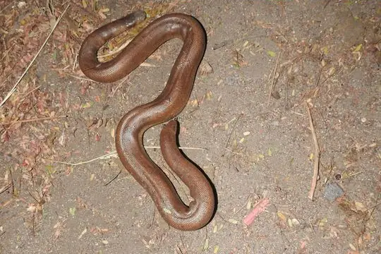
Red Sand BoaEryx johnii Red-spotted Diadem SnakeSpalerosophis arenarius
Red-spotted Diadem SnakeSpalerosophis arenarius Saw-scaled ViperEchis carinatus
Saw-scaled ViperEchis carinatus Sindh Thread SnakeMyriopholis blanfordi
Sindh Thread SnakeMyriopholis blanfordi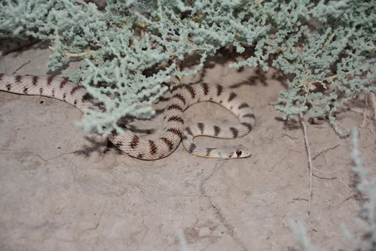
Spotted Desert RacerPlatyceps karelini Spotted Whip SnakeHemorrhois ravergieri
Spotted Whip SnakeHemorrhois ravergieri Steppe Ribbon RacerPsammophis lineolatus
Steppe Ribbon RacerPsammophis lineolatus Wadi RacerPlatyceps rhodorachis
Wadi RacerPlatyceps rhodorachis
No snakes in Afghanistan match.
Afghanistan’s snakes in numbers
- Families: Colubridae 17, Viperidae 6, Boidae 3, Elapidae 3, Psammophiidae 3, Leptotyphlopidae 1.